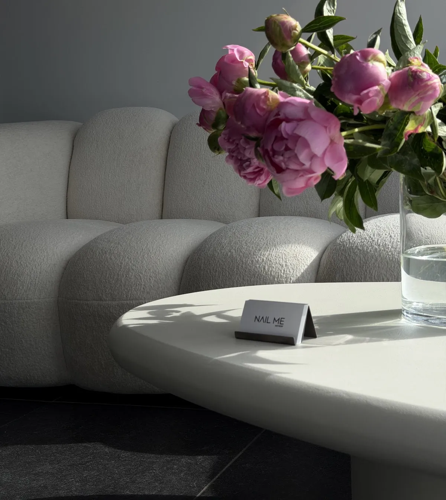
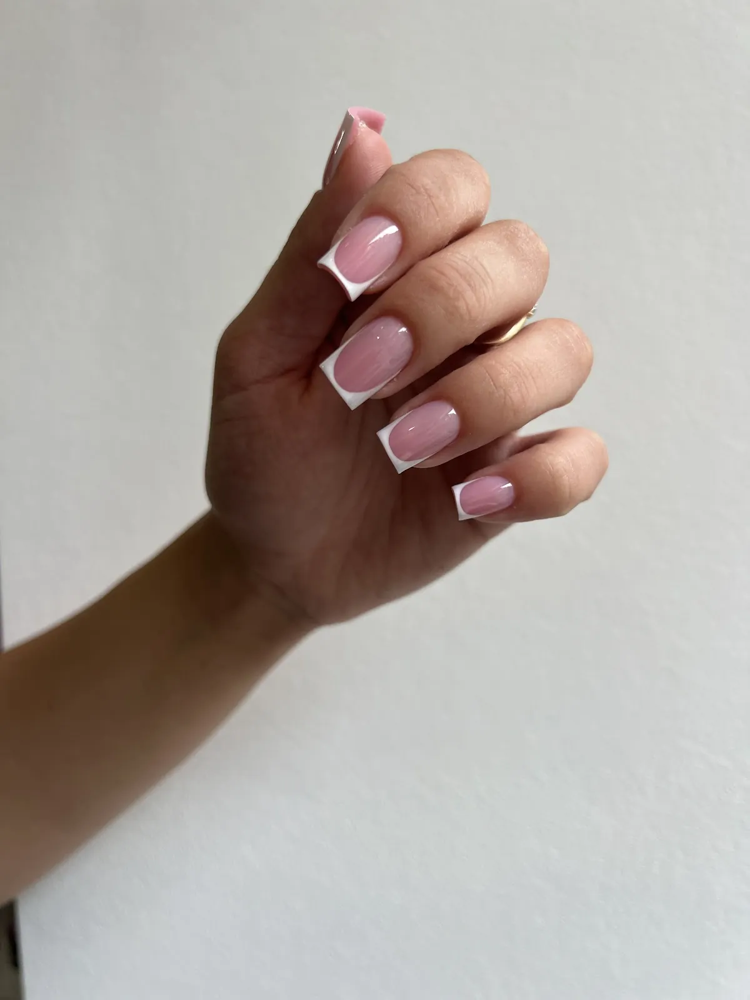
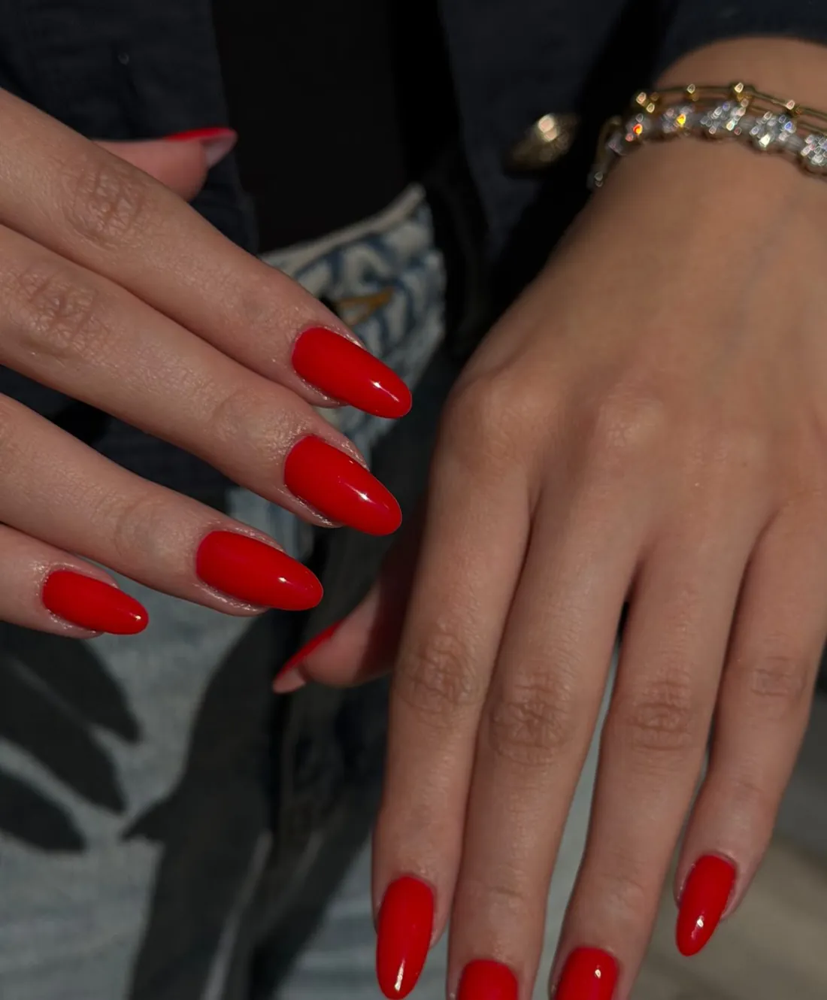
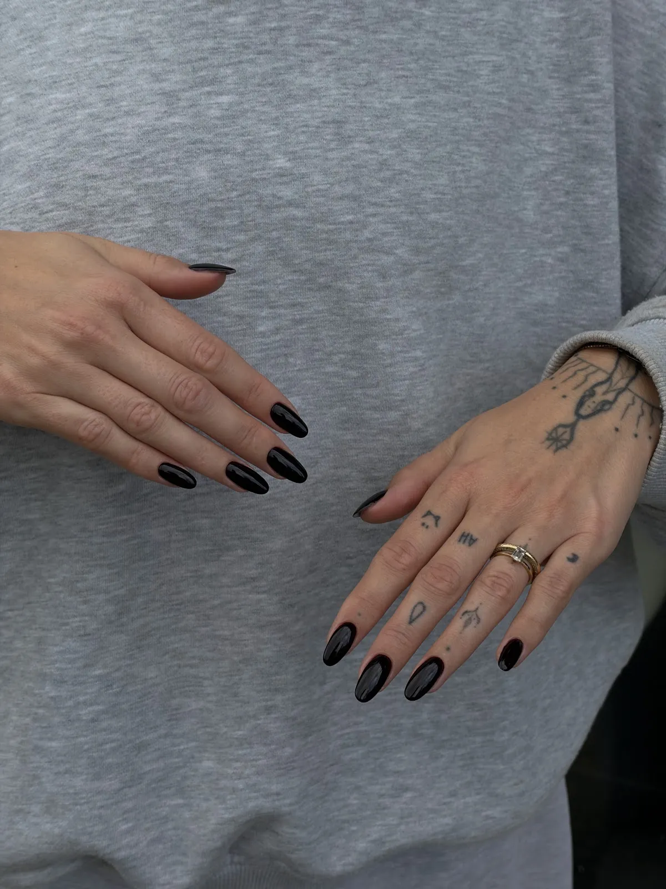
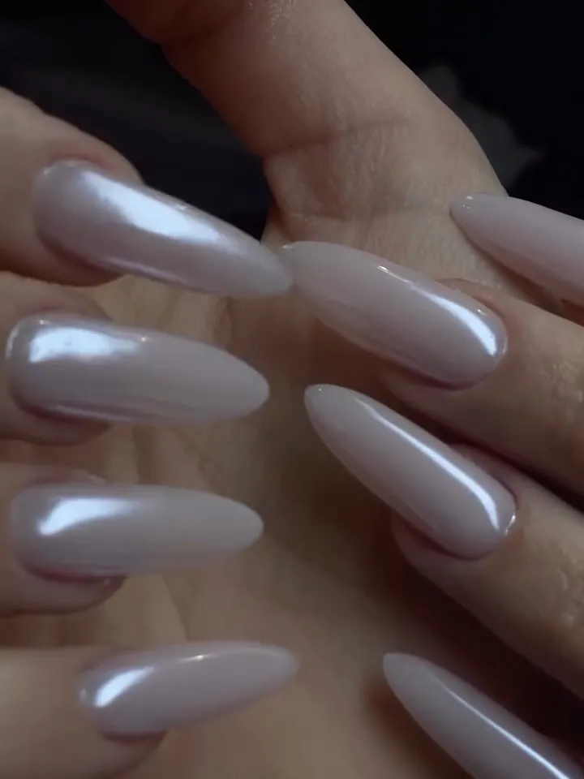
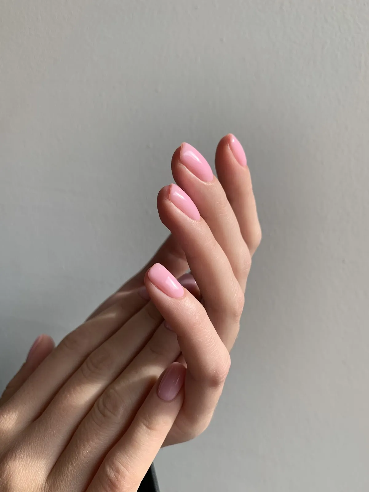
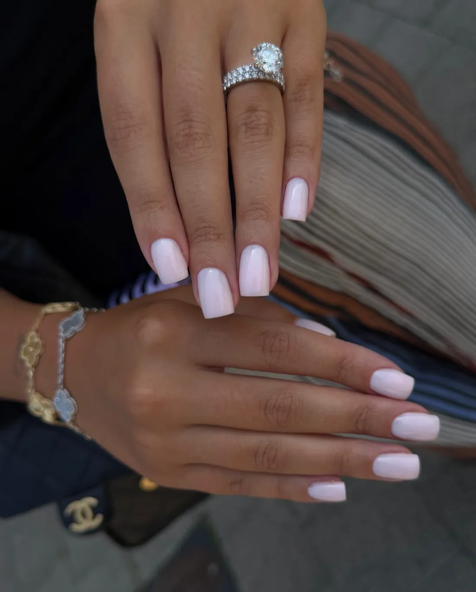
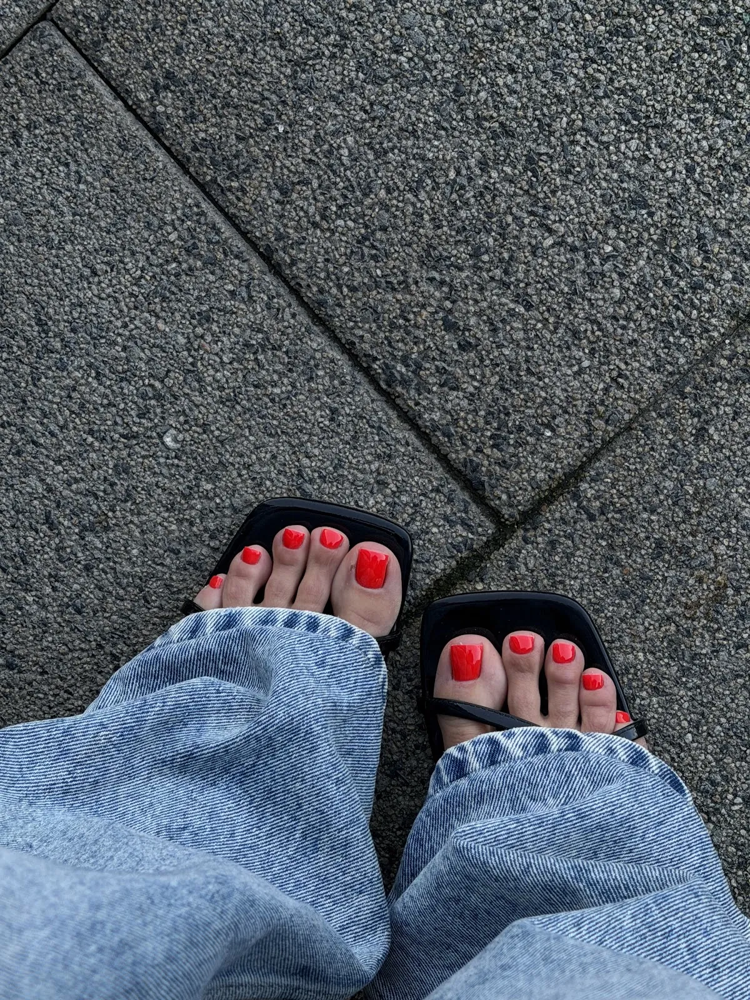
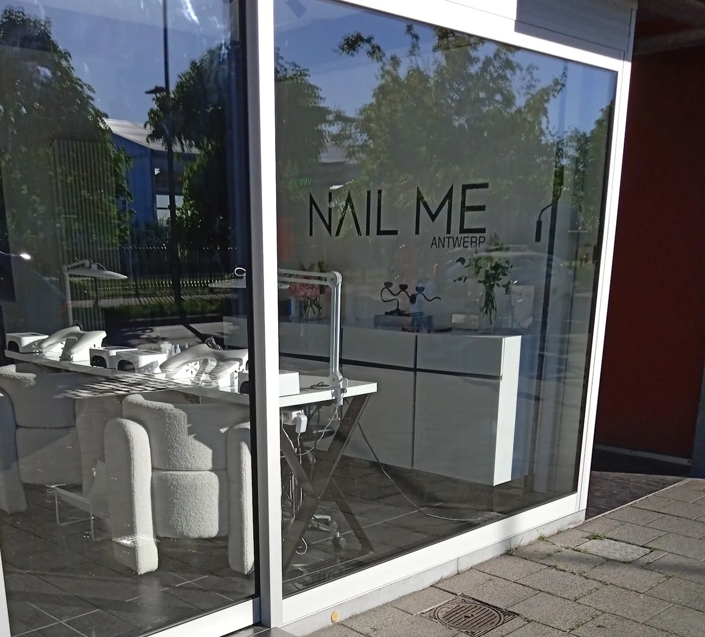
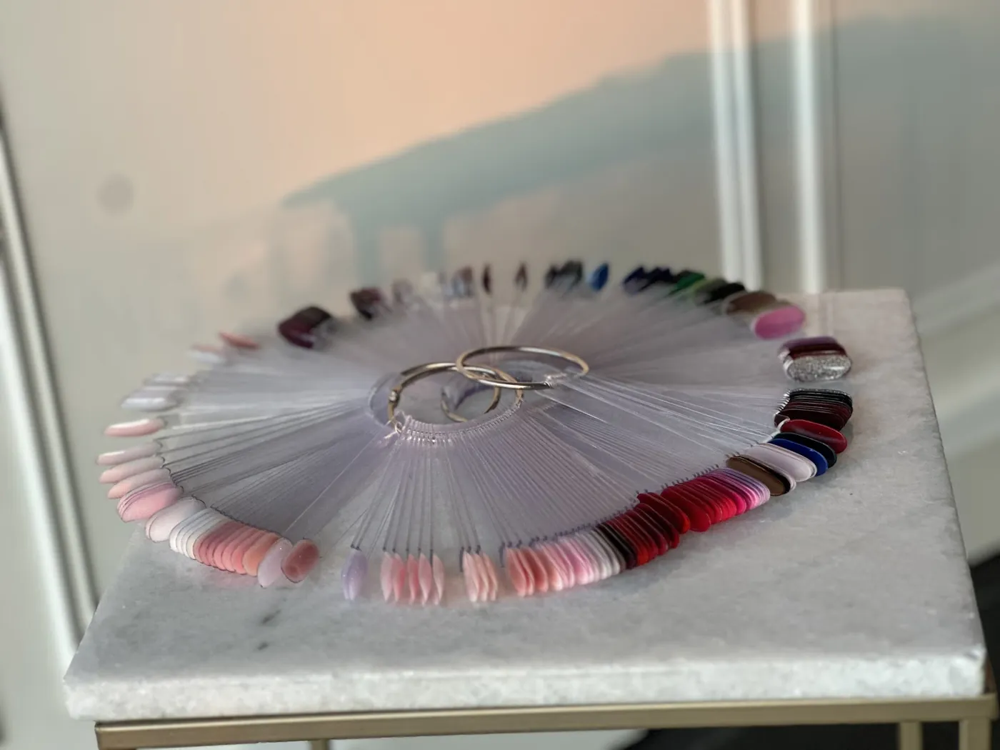

Het zit in de details.
Kom voor BIAB, gel of een verzorgde pedicure, of laat je wimpers en wenkbrauwen doen. We luisteren eerst naar wat je wil en werken daarna rustig, proper en precies tot het klopt.


op Salonized
Wat mag het zijn?
Een greep uit onze kaart. Bij de meeste nagelbehandelingen zit een manicure inbegrepen, zodat je basis altijd goed zit.
Nagels
BIAB en gel, natuurlijk of met kleur.
- BIAB naturelmet manicure, 60 min€ 69
- BIAB kleurmet manicure, 75 min€ 75
- Nieuwe set gelnagelsmet manicure, 75 min€ 85
- Russian manicure30 min€ 45
Pedicure
Medische pedicure, met of zonder kleur.
- Medische pedicure40 min€ 65
- Met gellak75 min€ 80
- Met BIAB75 min€ 85
- Gellak op de tenen60 min€ 60
Wimpers en brows
Een frisse blik, zonder elke ochtend te sukkelen.
- Brow lift met verven60 min€ 55
- LVL lash lift met verven60 min€ 55
- Korean lash lift60 min€ 50
- Wenkbrauwcorrectiezonder verven, 20 min€ 25
Make-up en haar
Voor een event of je trouwdag, ook met proefsessie.
- Dag make-up60 min€ 75
- Avond of event make-up60 min€ 100
- Opsteekkapsel60 min€ 120
- Bruidsarrangementmake-up en haar€ 300
Nail art, French of een donut glazed finish komen er los bij. De volledige lijst zie je wanneer je online boekt.
Van zacht roze tot klassiek rood
Rood is altijd een goede keuze. Maar of je nu gaat voor een glazed finish, een natuurlijke BIAB of iets dat opvalt, we geven je eerlijk advies over vorm, lengte en kleur.








Even een uur voor jezelf
Verse bloemen op tafel, een zachte zetel en licht dat binnenvalt langs de kaai. Hier zit je rustig, of je nu wil bijpraten of gewoon je boek leest.
Iets wat klanten in hun reviews keer op keer opmerken.
Twijfel je over vorm of kleur? Dan denken we met je mee voor we beginnen.
Of een glas water. Neem gerust even je tijd.
Wat klanten zeggen
207 reviews op Salonized
22 reviews op Google
"Supertevreden met mijn nagels! Ik kreeg heel goed advies over de juiste vorm, lengte en kleur. Er werd echt geluisterd naar mijn wensen en het resultaat is perfect. Zeker een aanrader!"
"Liliia was erg lief. Ze vroeg steeds of alles in orde was, heel fijn. Erg zorgvuldig. Heel tevreden met mijn mooie nagels 💅"
"Mijn nagels zijn heel mooi gedaan terwijl ik rustig mijn boek kon lezen. Aanrader!"
Tijd voor nieuwe nagels?
Online zie je meteen welke momenten nog vrij zijn. Liever eerst iets vragen? Stuur ons een berichtje op WhatsApp.